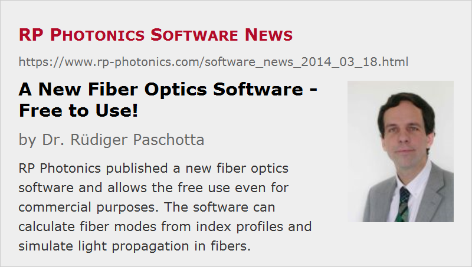

A New Fiber Optics Software – Free to Use!
Posted on 2014-03-18 in the RP Photonics Software News (available as e-mail newsletter!)
Permanent link: https://www.rp-photonics.com/software_news_2014_03_18.html
Author: Dr. Rüdiger Paschotta, RP Photonics Consulting GmbH
Abstract: RP Photonics published a new fiber optics software and allows the free use even for commercial purposes. The software can calculate fiber modes from index profiles and simulate light propagation in fibers.
Ref.: description of the RP Fiber Calculator software

I have recently developed a new software named the RP Fiber Calculator. Compared with RP Fiber Power, this is a much simpler thing: it has a very handy graphical user interface, and should require nearly no time to get started. You can very easily edit refractive index profiles, get the guided modes calculated and inspect various kinds of mode properties, simulate launching a laser beam and also propagation inside and outside the fiber.
Now we have decided to distribute that software for free – even for commercial use, and without registration – as another gift of RP Photonics to the international photonics community. We see that in the context of our coming 10-year anniversary. As you know, our approach is to work hard in order to help very many people even for free, which in turn has given RP Photonics an extraordinary reputation as the basis for a remarkable success.
A more powerful “PRO” version of this fiber optics software is also currently under development. That will not be free, but moderately priced, and offers a number of additional useful features. For example, one can define refractive index profiles indirectly via a doping profile, and then also include chromatic dispersion. Also, it can calculate fiber-to-fiber coupling. Finally, of course we offer full technical support for a paid version.
How does all that compare with our well established RP Fiber Power software? RP Fiber Power is by far more flexible and powerful, mainly due to the built-in script language. Besides, since version V5 it offers numerical beam propagation, which vastly expands its range of applications. Also, it covers active fiber optics, i.e., laser amplification in rare-earth-doped fibers (which was the focus of the early versions), and also ultrashort pulse propagation.
However, we think there are many people in the industry and in research labs who need only a simpler tool such as RP Fiber Calculator. They can do a lot already with the free version (published yesterday) and may be fully satisfied with the coming PRO version. And I am sure they will always keep in mind: if you once need an absolutely powerful fiber optics simulation tool, you find it on the RP Photonics website.
This article is a posting of the RP Photonics Software News, authored by Dr. Rüdiger Paschotta. You may link to this page, because its location is permanent.
Note that you can also receive the articles in the form of a newsletter or with an RSS feed.
|  |
If you like this article, share it with your friends and colleagues, e.g. via social media:
These sharing buttons are implemented in a privacy-friendly way!